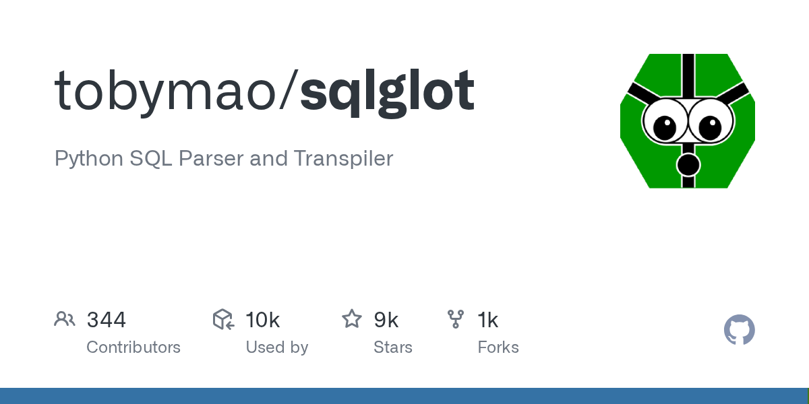

Atlas / Text-to-SQL Hardening / Query Validation
survey · 20 citations · 8 min read
Why Single-Layer Validation Fails
The Validation Pipeline
Before generating SQL, classify whether the user's message warrants a database query. Off-topic, ambiguous, or schema-mismatched inputs refused early — before any SQL tokens are emitted. [3]
Parse the generated SQL and enforce a default-deny policy on statement types. Regex is insufficient — use a real AST parser. [5]
Traverse the parse tree against what this user's role is authorized to see. Covers SELECT, WHERE, JOIN ON, subqueries, and CTEs — catches hallucinated fields immediately. [7]
Catalog-aware validator resolves every reference against live DB metadata. Engine-native dry-run (PARSEONLY / EXPLAIN) catches dialect-specific syntax, permission grants, and insane cost estimates. [10]
Do not trust the LLM to consistently include required filters. Mechanically rewrite the parsed AST — policies evaluated against the AST, never raw prompt text. A regex-matched tenant_id in the user message is not an enforced predicate. [7]
Backstop if any prior layer has a bug. Physical write isolation — not a policy setting. Cannot be bypassed by application code. [12]
Failure Mode → Layer Matrix
| Failure Class | Error Code | Caught By |
|---|---|---|
| Schema hallucination (column/table not in DB) | UNKNOWN_COLUMN | Layer 3 — Semantic |
| Wrong join path (fabricated FK relationships) | CARTESIAN_JOIN | Layer 3 — Semantic |
| Missing required filter (tenant_id, date range) | MISSING_REQUIRED_FILTER | Layer 3 — Semantic + Layer 4 — Policy |
| Wrong table selection (payments vs revenue_recognition) | WRONG_SCHEMA_OBJECT | Layer 3 — Semantic |
| Unsafe statement type (DELETE / DROP from ambiguous intent) | FORBIDDEN_STMT_TYPE | Layer 1 — Allowlist |
| Syntax errors (unbalanced parens, invalid keywords) | PARSE_ERROR | Layer 2 — AST + Layer 3 — Compile Gate |
| PII column in SELECT, WHERE, CTE projection | RESTRICTED_COLUMN | Layer 2 — AST |
| Off-topic / schema-mismatched user input | INTENT_MISMATCH | Layer 0 — Intent |
Implementation Reference — Layers 1 & 2 (sqlglot)
Tools

github.com/tobymao/sqlglot — 31-dialect AST parser, mutation API, type inference · ⭐ 9.3k [6]
| Library | AST | Dialects | Stars | Best For |
|---|---|---|---|---|
| sqlglot | Full | 31 | ⭐ 9.3k | Traversal, mutation, type inference — layers 1–4 [6] |
| sqlparse | Partial | DB-agnostic | ⭐ 3.9k | Lightweight tokenization; non-validating [9] |
| pg_query | Full (PG) | PostgreSQL | — | Exact PG parse tree via libpg_query [19] |
| sqlfluff | No | Linting only | — | SQL style / dialect linting, not safety gates |
Emerging Threats
Evidence Logging (SOC 2 / HIPAA)
Implementation Ladder
In This Expedition
Sources